| 日付 | 2012年1月28日（土） |
|---|---|
| 山域 | 箱根 |
| メンバー | 家族（妻、長女・0歳） |
| 山行形態 | 子連れ日帰り |
| アクセス | 車 |
| ルート (Map) | 幕山登山口→幕山→大石ヶ平→幕山登山口 |
今年最初の山は梅の花で有名な幕山に行ってみることにする。
前回行ったときは梅の咲く季節で大混雑していたが、
今回は少し時期が早いので、混雑を避けられそうだ。
8:36 幕山登山口駐車場到着。標高180m。
混雑はしていないがそこそこ車は停まっている。

正面に幕山が聳える。まだ梅はほとんど咲いていないようだ。
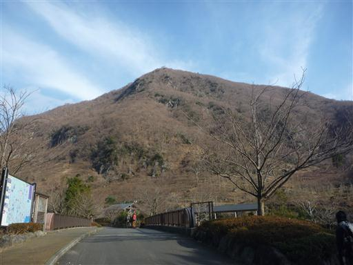
わずかながら、花を咲かせている木もある。
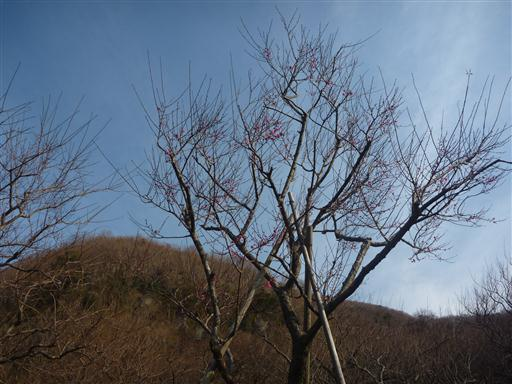
付近は美しく整備されている。
もうすぐ梅の季節で観光客が多数訪れるので、準備作業を行っている人がいる。
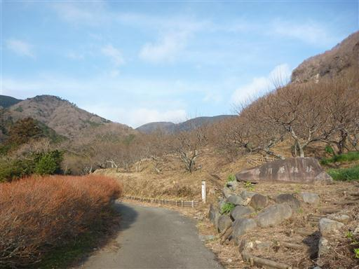
幕山公園を離れて登山道に入っていく。
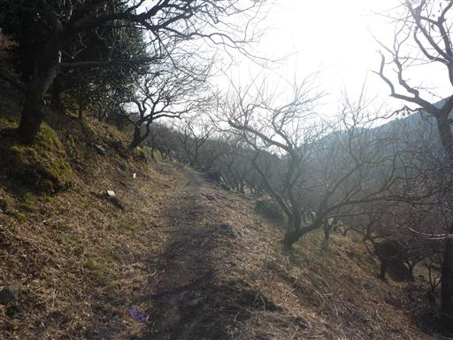
岩場ではロッククライミングを行っている人がいる。岩場は人が多くて大盛況のようだ。
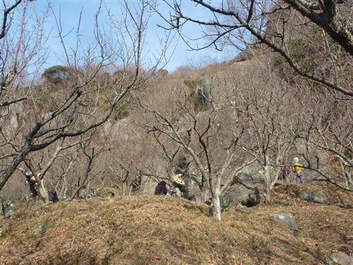
標高を上げるに従って少しずつ展望が広がってくる。
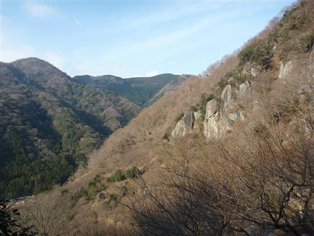
9:45 幕山山頂到着。標高625m。
山頂には誰もいない。駐車場に停まっていた車は、
幕山公園の作業者かロッククライマーがほとんどだったようだ。
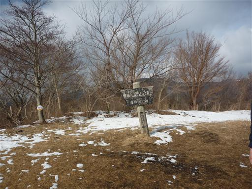
山頂からは海を見渡すことができる。左下に見えているのは真鶴半島だ。
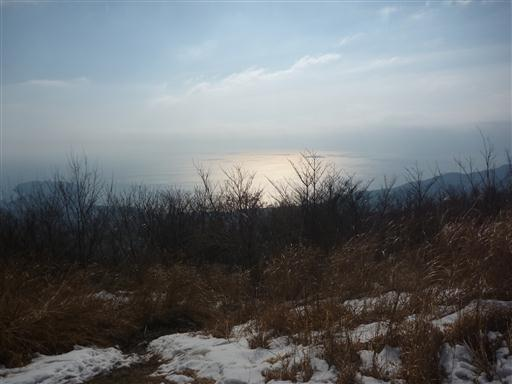
山頂部は雪が積もっている。暖かい地域の低い山なのでこんなに雪が積もっているとは思わなかった。
ちょっと前に都心部でも珍しく雪が積もったため、この山もこれほど雪が積もるのは珍しいのかもしれない。
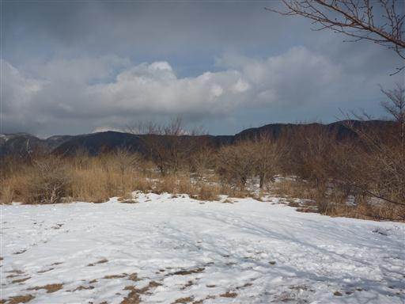
せっかく雪があるので、雪だるまをつくってみる。
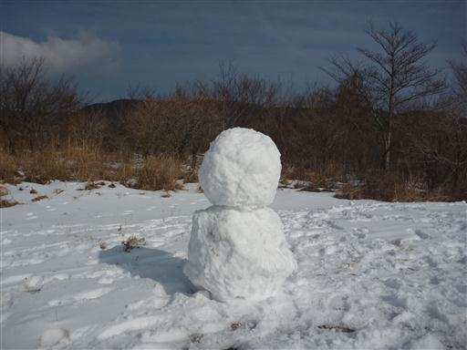
下山道は北側斜面なので雪が多い。
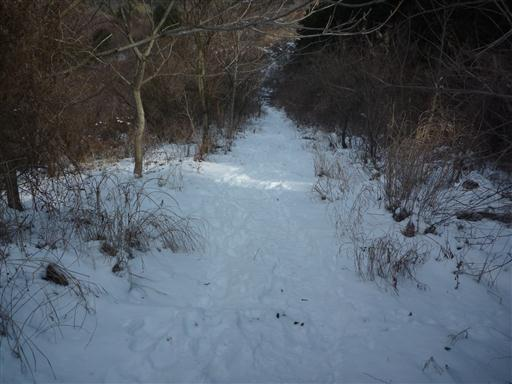
低い山なので少々雪があっても楽々下山できると思っていたが、大間違い。
道を覆う笹薮に苦戦する。
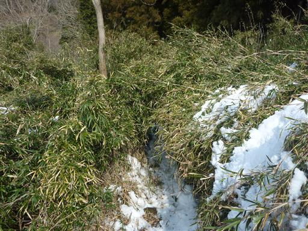
笹の上に雪が積もっていて、その重みで登山道に笹が覆いかぶさっている。
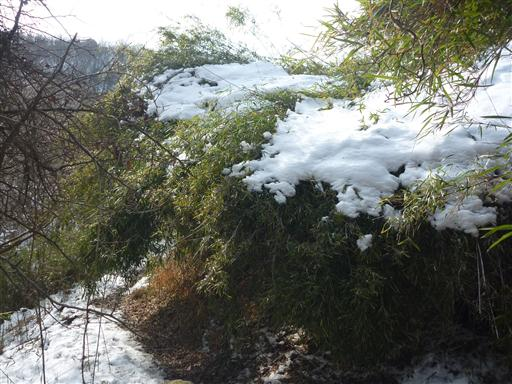
まるでビッグウェーブのような光景だ。
這いつくばらないと進めないようなところもあり、子供を背負って通過するのは相当に厳しい。
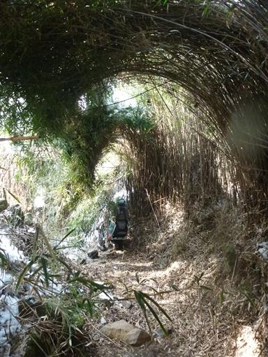
悪魔のような笹薮を抜け、ようやく一息つくことができる。
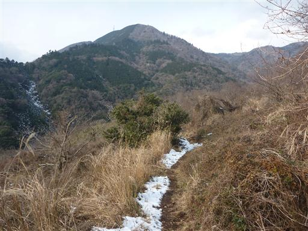
しばらく下ると車道に出てくる。道の脇には山の神が祀られている。
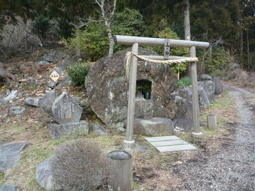
あとは遊歩道をのんびりと歩いて駐車場に戻る。
11:50 幕山登山口駐車場到着。

帰りに真鶴半島にある魚座というレストランに寄る。
人気の店でかなり待たされる。
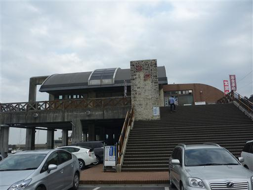
魚座の前に広がる真鶴港。美しい風景だ。
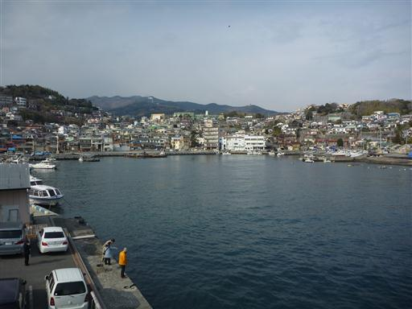
店内には大きな水槽が設置されている。
タイやヒラメのほかにサメなどもいて、まるで水族館のようだ。
美味しい刺身を食べて帰宅する。
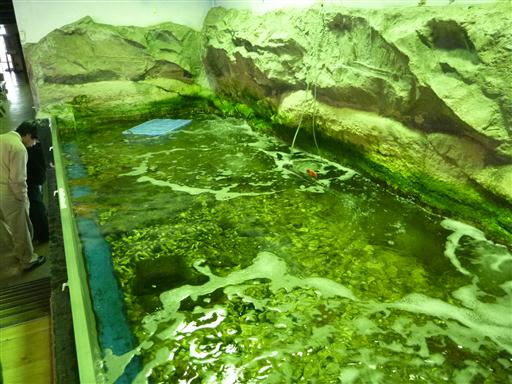